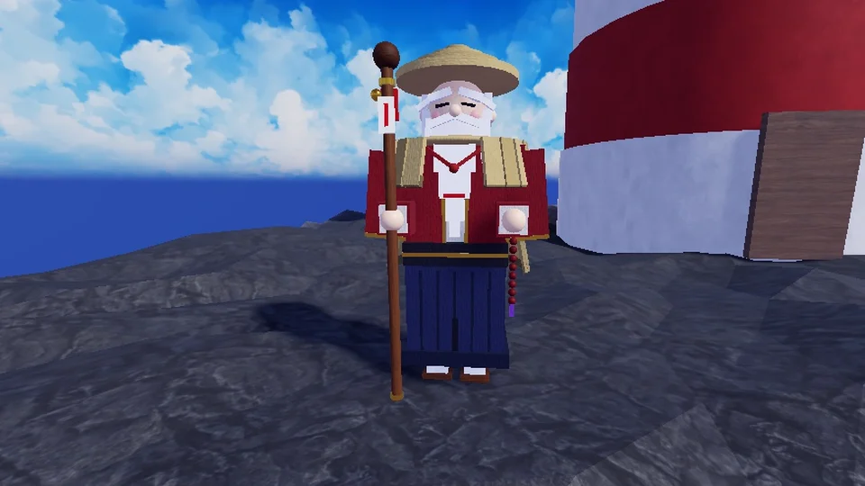
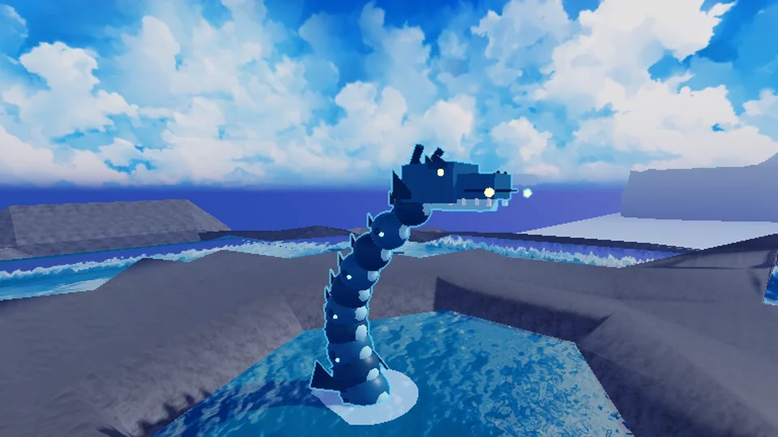
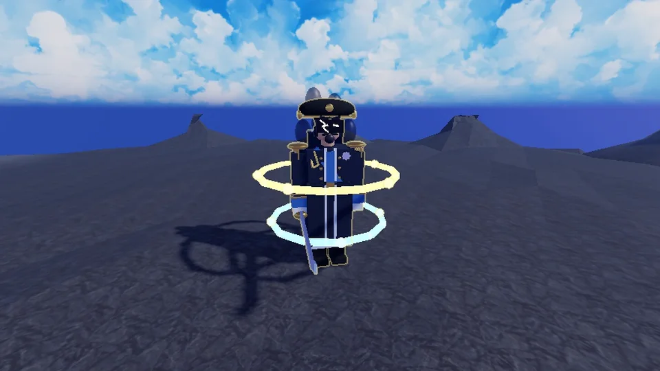

Test version on Roblox
ZORYT
Anime Training Simulator
Your village burned down in a single night. Train with Sensei Hanzo, grow stronger with every session, beat bosses in combo battles and free world after world from the darkness.
A Roblox game for PC and phones, in many languages
A first look
Early shots from the game in development: your mentor and two bosses of the sea worlds.



How it plays
Training as mini-games
Every training ground plays differently: pop bubbles, beat the taiko drums, repeat patterns from memory, trace fireflies, dive for pearls. Each round makes you stronger, and auto-training keeps you going.
Boss fights with combos
Dodge the attacks, strike back, and when the moment comes, finish the combo with taps, swipes and rhythm right on time. A mini-boss guards the gate of every world.
Worlds to free
From a burned sakura village through volcanoes, sky peaks and a misty forest to harbors, reefs and a storm-swept lighthouse. Every world has its own story, people to rescue and secrets.
Rebirth and the PATH
Spend your Power on swords and auras, then rebirth: you come back stronger, open the next world and new branches of the PATH skill tree.
Pets from eggs
Every world has its own egg: hatch otters, seagulls, crabs, little dragons, whales and more, and take your best team along.
Swords, auras, potions
Collect swords and auras that glow around you, and drink Strength, Luck or Healing potions when it counts.
With friends or alone
Climb the Endless Tower solo or as a team, join a house of the Order of Sakura and test yourself against other players in PvP arenas.
Events and invasions
Regular events bring Double Training, Lucky Hatch, Double Coins or Shadow Night. Shadow bosses invade the worlds, and each world has events of its own, from lantern festivals to thunderstorms.
Between battles
Fishing and diving
Fish off the piers, dive for sunken chests and keep an eye out for the ghost ship drifting through the fog.
Belt exams
Earn your belts from white to black by passing Sensei Hanzo's exams.
The Codex
Monsters, worlds, pets, gear and hidden secrets: everything you find goes into the Codex, with rewards for full collections.
Titles and emotes
Earn titles for your feats, like Black Belt, and greet other players with emotes.
Also
In testing
ZORYT is already on Roblox as a test version: the worlds, bosses and story are being tested and polished right now. Next come new worlds and new chapters of the story, more bosses to beat and pets to hatch, and then the full launch.
Questions and ideas: pegasohlib12@gmail.com